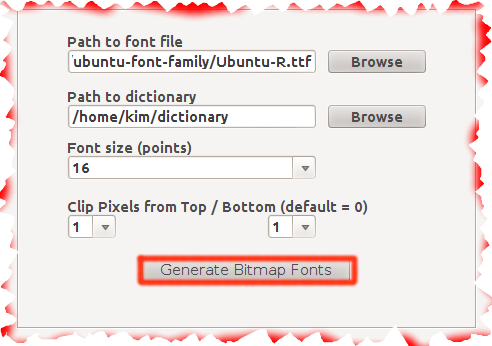
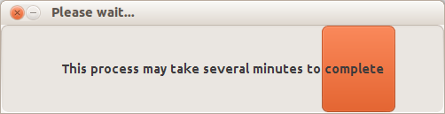
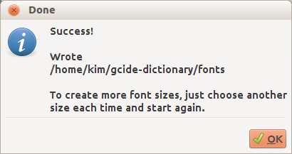

The BitmapFontGenerator (GUI) Documentation
Say you converted a Dictd dictionary file into a CSV file for DictionaryGeneration,
you then generated the dictionary files with DictionaryGeneration (of course). The next
step is to pack the generated files in a some empty DictionaryForMIDs.jar/jad files
to be able to use it on some mobile phone or PDA. Say the dictionary you would like
to install is some Chinese-English dictionary. Say your mobile device does not support
the Chinese language (does not know how to display the Chinese characters). What you need
is to create bitmap fonts that will be displayed like pictures of the Chinese characters
in your mobile device. Fortunately the DictionaryForMIDs project has the BitmapFontGenerator.
The BitmapFontGenerator tab comes just after the DictionaryGeneration tab and before the
JarCreator's. Let us have an idea of what we need to do to get it generate bitmap fonts for us.
Filling the fields in
- Provide a path to a valid Truetype font. This font file will be used to generate the bitmap
fonts for your mobile device. I like the Ubuntu-Font-Family included in Ubuntu from 11.04 on.
they are located in /usr/share/fonts/truetype/ubuntu-font-family. I think they look beautiful :-). - Provide the path to the folder named dictionary where your dictionary files are located in.
- Choose a font size from the list. You can choose between 8 to 36. Note that the same dictionary
can have many font sizes. For that, you have to select a new size after each font generation and
relaunch a new font generation process by hitting the Generate Bitmap Fonts button again. - Choose a value in the list provided, between 0 and 4 for the option Clip Top.
- Choose a value in the list provided, between 0 and 4 for the option Clip Bottom.

Launching the bitmap font generation preferences summary window
The preferences summary window lets you reviewthe options you selected before actually going
to the font generation process. You can cancel
the font generation by closing the window before
launching the process.

Generating the bitmap fonts
Hitting the Generate Bitmap Fonts button launches the process.The font generation process.

End of the font generation process.
